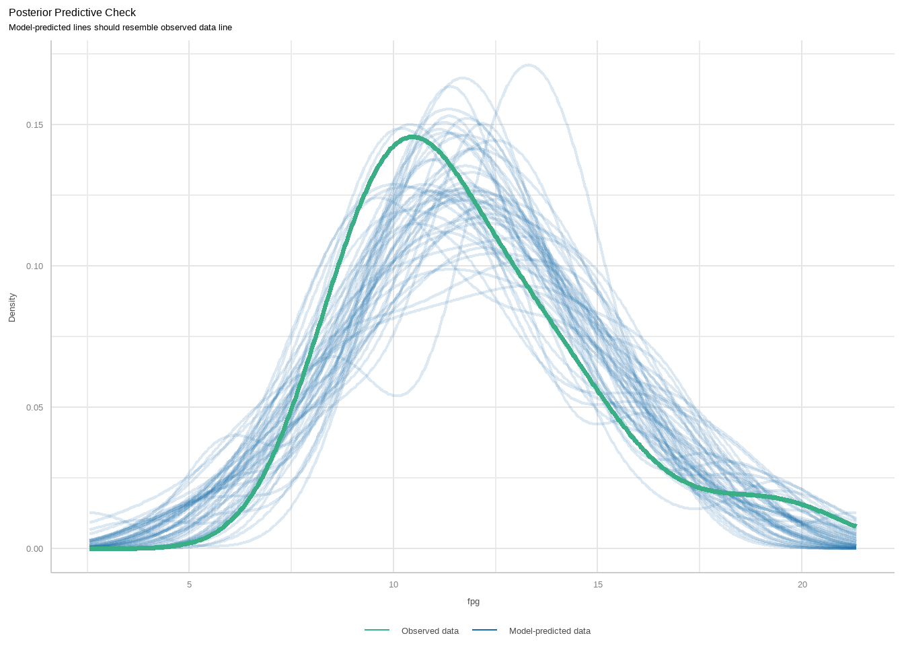
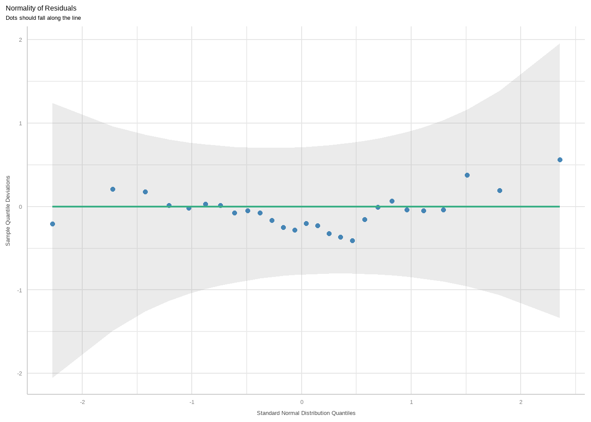
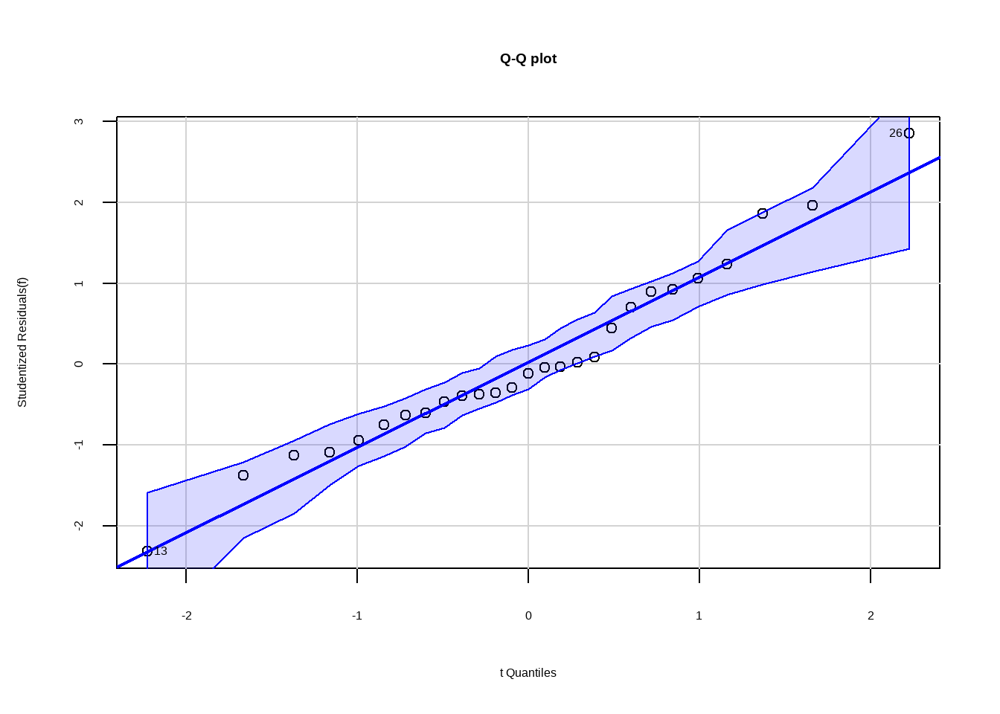

df15_1 <- data.frame(
cho = c(5.68,3.79,6.02,4.85,4.60,6.05,4.90,7.08,3.85,4.65,4.59,4.29,7.97,
6.19,6.13,5.71,6.40,6.06,5.09,6.13,5.78,5.43,6.50,7.98,11.54,5.84,
3.84),
tg = c(1.90,1.64,3.56,1.07,2.32,0.64,8.50,3.00,2.11,0.63,1.97,1.97,1.93,
1.18,2.06,1.78,2.40,3.67,1.03,1.71,3.36,1.13,6.21,7.92,10.89,0.92,
1.20),
ri = c(4.53, 7.32,6.95,5.88,4.05,1.42,12.60,6.75,16.28,6.59,3.61,6.61,7.57,
1.42,10.35,8.53,4.53,12.79,2.53,5.28,2.96,4.31,3.47,3.37,1.20,8.61,
6.45),
hba = c(8.2,6.9,10.8,8.3,7.5,13.6,8.5,11.5,7.9,7.1,8.7,7.8,9.9,6.9,10.5,8.0,
10.3,7.1,8.9,9.9,8.0,11.3,12.3,9.8,10.5,6.4,9.6),
fpg = c(11.2,8.8,12.3,11.6,13.4,18.3,11.1,12.1,9.6,8.4,9.3,10.6,8.4,9.6,10.9,
10.1,14.8,9.1,10.8,10.2,13.6,14.9,16.0,13.2,20.0,13.3,10.4)
)
str(df15_1)
## 'data.frame': 27 obs. of 5 variables:
## $ cho: num 5.68 3.79 6.02 4.85 4.6 6.05 4.9 7.08 3.85 4.65 ...
## $ tg : num 1.9 1.64 3.56 1.07 2.32 0.64 8.5 3 2.11 0.63 ...
## $ ri : num 4.53 7.32 6.95 5.88 4.05 ...
## $ hba: num 8.2 6.9 10.8 8.3 7.5 13.6 8.5 11.5 7.9 7.1 ...
## $ fpg: num 11.2 8.8 12.3 11.6 13.4 18.3 11.1 12.1 9.6 8.4 ...
head(df15_1)
## cho tg ri hba fpg
## 1 5.68 1.90 4.53 8.2 11.2
## 2 3.79 1.64 7.32 6.9 8.8
## 3 6.02 3.56 6.95 10.8 12.3
## 4 4.85 1.07 5.88 8.3 11.6
## 5 4.60 2.32 4.05 7.5 13.4
## 6 6.05 0.64 1.42 13.6 18.316 多元线性回归
16.1 多元线性回归
使用课本例15-1的数据，手动摘录：
数据一共5列，第1列是总胆固醇，第2列是甘油三酯，第3列是胰岛素，第4列是糖化血红蛋白，第5列是空腹血糖（因变量）。
在建立回归方程前，先简单探索下数据：
library(GGally)
ggpairs(df15_1) + theme_bw()从这幅图来看，血糖和糖化血红蛋白相关性最大，和甘油三酯关系最小。
接下来建立回归方程：
f <- lm(fpg ~ cho + tg + ri + hba, data = df15_1)
summary(f)
##
## Call:
## lm(formula = fpg ~ cho + tg + ri + hba, data = df15_1)
##
## Residuals:
## Min 1Q Median 3Q Max
## -3.6268 -1.2004 -0.2276 1.5389 4.4467
##
## Coefficients:
## Estimate Std. Error t value Pr(>|t|)
## (Intercept) 5.9433 2.8286 2.101 0.0473 *
## cho 0.1424 0.3657 0.390 0.7006
## tg 0.3515 0.2042 1.721 0.0993 .
## ri -0.2706 0.1214 -2.229 0.0363 *
## hba 0.6382 0.2433 2.623 0.0155 *
## ---
## Signif. codes: 0 '***' 0.001 '**' 0.01 '*' 0.05 '.' 0.1 ' ' 1
##
## Residual standard error: 2.01 on 22 degrees of freedom
## Multiple R-squared: 0.6008, Adjusted R-squared: 0.5282
## F-statistic: 8.278 on 4 and 22 DF, p-value: 0.0003121这个结果信息很丰富，给出了截距，各自变量的系数以及标准误、t值、P值，最下方给出了决定系数R2，调整后的R2，F值，总体方程的P值等。
16.2 模型评价
回归模型可以通过R2、AIC、BIC、RMSE等评价，R2范围在0~1之间，越接近1说明结果越好。AIC、BIC、RMSE是越小越好。
library(performance)
r2(f)
## # R2 for Linear Regression
## R2: 0.601
## adj. R2: 0.528
AIC(f)
## [1] 120.78
BIC(f)
## [1] 128.5551
rmse(f)
## [1] 1.81395或者直接输出所有结果：
model_performance(f)
## # Indices of model performance
##
## AIC | AICc | BIC | R2 | R2 (adj.) | RMSE | Sigma
## ---------------------------------------------------------------
## 120.780 | 124.980 | 128.555 | 0.601 | 0.528 | 1.814 | 2.01016.3 回归诊断
判断数据是否满足多元线性回归的条件，也就是4个条件：
- 正态性
- 独立性
- 等方差性
- 线性
16.3.1 看图判断
opar <- par(mfrow = c(2,2))
plot(f)
par(opar)- 第1幅图（左上）是残差拟合图，展示真实残差和拟合残差的关系，判读是否满足线性这个条件，如果满足，则应该为一条直线，但是本图明显是一条曲线，说明不是很满足线性这个条件，可能需要加二次项。
- 第2幅图（右上）是正态Q-Q图，判断是否满足正态性这个条件，通过这个图来看，基本满足。
- 第3幅图（左下）是位置尺度图，判读是否满足同方差性，如果满足，水平线两侧的点应该随机分布，从此图来看基本满足。
- 第4幅图（右下）是残差杠杆图，用于识别离群点等。
上面是比较原始的方法，下面介绍一个非常现代化的R包，用于实现以上图形：
library(performance)
check_model(f)是不是更加好看了呢？
这几个图也可以单独画出来，使用以下代码即可：
diagnostic_plots <- plot(check_model(f, panel = FALSE))首先看第一个图。这个图是基于check_predictions()函数的，属于事后检验，是检查真实数据和模型数据的拟合情况的。下图中绿色粗线是真实的预测变量的分布情况，蓝色线条表示模拟的分布，理想的情况应该是完全重合的。从下图来看，其实是有些问题的，这说明我们用的模型可能不太合适。
diagnostic_plots[[1]]
下面看第2张图。这张图是检查预测变量和结果变量是否符合线性关系的。合理的情况是残差完全随机地分布在参考线两侧。从这张图来看我们的数据其实不太完美。
diagnostic_plots[[2]]
下面是第3幅图，是用来检查方差齐性的，同上面介绍过的位置尺度图。
diagnostic_plots[[3]]第4幅图是用来观察强影响点或者离群值、异常值的。使用的是库克距离（cook’s-distance）来计算的，图中在虚线（库克距离）外的点可被认为是异常值。
diagnostic_plots[[4]]第5幅图是关于多重共线性的。是通过方差膨胀因子来评价的，下图中展示了4个变量的VIF，基本都在3以下，可认为不存在多重共线性：
diagnostic_plots[[5]]第6幅图是看正态性的。理想情况下数据点应该均匀的分布在横线上，最好是和横线重合，尤其是尾部，我们这个数据还算可以。
diagnostic_plots[[6]]
16.3.2 统计方法验证
也可以通过统计方法判断，比如gvlma包可以实现对线性模型的综合判断：
library(gvlma)
gvmodel<-gvlma(f)
summary(gvmodel)
##
## Call:
## lm(formula = fpg ~ cho + tg + ri + hba, data = df15_1)
##
## Residuals:
## Min 1Q Median 3Q Max
## -3.6268 -1.2004 -0.2276 1.5389 4.4467
##
## Coefficients:
## Estimate Std. Error t value Pr(>|t|)
## (Intercept) 5.9433 2.8286 2.101 0.0473 *
## cho 0.1424 0.3657 0.390 0.7006
## tg 0.3515 0.2042 1.721 0.0993 .
## ri -0.2706 0.1214 -2.229 0.0363 *
## hba 0.6382 0.2433 2.623 0.0155 *
## ---
## Signif. codes: 0 '***' 0.001 '**' 0.01 '*' 0.05 '.' 0.1 ' ' 1
##
## Residual standard error: 2.01 on 22 degrees of freedom
## Multiple R-squared: 0.6008, Adjusted R-squared: 0.5282
## F-statistic: 8.278 on 4 and 22 DF, p-value: 0.0003121
##
##
## ASSESSMENT OF THE LINEAR MODEL ASSUMPTIONS
## USING THE GLOBAL TEST ON 4 DEGREES-OF-FREEDOM:
## Level of Significance = 0.05
##
## Call:
## gvlma(x = f)
##
## Value p-value Decision
## Global Stat 9.68910 0.046003 Assumptions NOT satisfied!
## Skewness 0.65344 0.418886 Assumptions acceptable.
## Kurtosis 0.04015 0.841193 Assumptions acceptable.
## Link Function 7.68064 0.005582 Assumptions NOT satisfied!
## Heteroscedasticity 1.31487 0.251515 Assumptions acceptable.- 全局统计量：粗略估计结果变量和预测变量是否符合线性关系，结果是不符合
- 偏度和峰度：检验残差分布，结果是符合
- 连接函数：检测结果变量是连续型还是二分类，结果是不符合
- 异方差：检验方差齐性，结果是符合
以上是多个条件一起输出判断，也可以针对单独的条件进行判断。
首先看下正态性的判断。
library(car)
# 验证正态性
qqPlot(f,labels = row.names(df15_1), id.method = "identify",simulate = T,
main = "Q-Q plot") 
## [1] 13 26从图中可看出正态性基本满足。
当然也可以使用非常好用的performance包实现：
check_normality(f)
## OK: residuals appear as normally distributed (p = 0.671).检测离群值，基于cook距离：
check_outliers(f)
## 1 outlier detected: case 25.
## - Based on the following method and threshold: cook (0.9).
## - For variable: (Whole model).检测残差（或者因变量）独立性：
set.seed(123)
check_autocorrelation(f)
## OK: Residuals appear to be independent and not autocorrelated (p = 0.296).或者通过car包：
set.seed(123)
# 验证因变量独立性
durbinWatsonTest(f)
## lag Autocorrelation D-W Statistic p-value
## 1 0.1778885 1.634654 0.296
## Alternative hypothesis: rho != 0P值大于0.05，满足条件。
# 验证线性
crPlots(f)通过观察成分残差图，线性基本满足。
下面是检测方差齐性：
# 验证方差齐性
ncvTest(f)
## Non-constant Variance Score Test
## Variance formula: ~ fitted.values
## Chisquare = 0.0004274839, Df = 1, p = 0.9835P值大于0.05，方差齐性满足。
方差齐性检验也可以通过performance包实现：
# performance检测方差齐性
check_heteroscedasticity(f)
## OK: Error variance appears to be homoscedastic (p = 0.984).16.3.3 多重共线性的检验
下面是多重共线性的检验，通过计算方差膨胀因子检验。
vif(f)
## cho tg ri hba
## 2.185539 1.779862 1.278364 1.266730
vif(f)>4
## cho tg ri hba
## FALSE FALSE FALSE FALSE都小于4（标准有争议），基本不存在多重共线性。
或者通过performance实现：
check_collinearity(f)
## # Check for Multicollinearity
##
## Low Correlation
##
## Term VIF VIF 95% CI Increased SE Tolerance Tolerance 95% CI
## cho 2.19 [1.54, 3.62] 1.48 0.46 [0.28, 0.65]
## tg 1.78 [1.31, 2.95] 1.33 0.56 [0.34, 0.76]
## ri 1.28 [1.06, 2.32] 1.13 0.78 [0.43, 0.94]
## hba 1.27 [1.05, 2.32] 1.13 0.79 [0.43, 0.95]下面是两种自变量选择的方法，介绍的较为简单，更加详细的介绍请参考R语言实战临床预测模型中的变量选择合集，其中详细介绍了多种方法，如：
- 逐步回归法
- 最优子集法
- 先单后多法
- ……
16.4 逐步选择法
向后回归：
library(MASS)
stepAIC(f, direction = "backward")
## Start: AIC=42.16
## fpg ~ cho + tg + ri + hba
##
## Df Sum of Sq RSS AIC
## - cho 1 0.6129 89.454 40.343
## <none> 88.841 42.157
## - tg 1 11.9627 100.804 43.568
## - ri 1 20.0635 108.905 45.655
## - hba 1 27.7939 116.635 47.507
##
## Step: AIC=40.34
## fpg ~ tg + ri + hba
##
## Df Sum of Sq RSS AIC
## <none> 89.454 40.343
## - ri 1 25.690 115.144 45.159
## - tg 1 26.530 115.984 45.356
## - hba 1 32.269 121.723 46.660
##
## Call:
## lm(formula = fpg ~ tg + ri + hba, data = df15_1)
##
## Coefficients:
## (Intercept) tg ri hba
## 6.4996 0.4023 -0.2870 0.6632向前回归：
stepAIC(f, direction = "forward")
## Start: AIC=42.16
## fpg ~ cho + tg + ri + hba
##
## Call:
## lm(formula = fpg ~ cho + tg + ri + hba, data = df15_1)
##
## Coefficients:
## (Intercept) cho tg ri hba
## 5.9433 0.1424 0.3515 -0.2706 0.6382逐步回归：
stepAIC(f, direction = "both")
## Start: AIC=42.16
## fpg ~ cho + tg + ri + hba
##
## Df Sum of Sq RSS AIC
## - cho 1 0.6129 89.454 40.343
## <none> 88.841 42.157
## - tg 1 11.9627 100.804 43.568
## - ri 1 20.0635 108.905 45.655
## - hba 1 27.7939 116.635 47.507
##
## Step: AIC=40.34
## fpg ~ tg + ri + hba
##
## Df Sum of Sq RSS AIC
## <none> 89.454 40.343
## + cho 1 0.613 88.841 42.157
## - ri 1 25.690 115.144 45.159
## - tg 1 26.530 115.984 45.356
## - hba 1 32.269 121.723 46.660
##
## Call:
## lm(formula = fpg ~ tg + ri + hba, data = df15_1)
##
## Coefficients:
## (Intercept) tg ri hba
## 6.4996 0.4023 -0.2870 0.663216.5 全局择优法
也就是全子集回归法。
library(leaps)
leaps <- regsubsets(fpg ~ cho + tg + ri + hba, data = df15_1, nbest=4)
plot(leaps, scale = "Cp") # 通过Cp判断Cp是越小越好的，从上面这幅图来看，纳入3个自变量（tg/ri/hba）时最好。